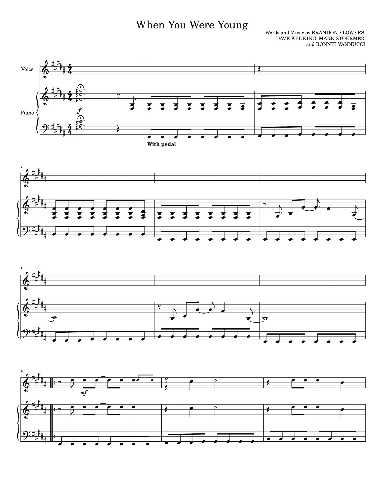

Task 1: Similarity
I am using the same three tracks used in the previous exercise to generate the similarity matrix.
In the similarity matrix, tracks 0-3 fall within the classical genre and 4-6 fall within the rock genre. Tracks 7, 8 and 9 are all performed by The Killers, who use synths extensively in many songs.
Track 7 is When You Were Young, which is classified as alternative rock, post-punk revival, new wave and heartland rock, and could be considered a quintessential alternative rock song, with an ethereal synth atmosphere and a powerful bass line that do not overpower the guitar riffs. Track 8 is Human, classified as new wave, synth-pop and dance-rock. It is also the most danceable of the three tracks, and while it features a powerful bass line, the synth and electronic sequencing are predominant. Lastly, track 9, Shot At The Night, is the most significant departure from The Killers' sound. It is classified as a synth-pop, pop-rock song, and it is very synth-heavy and more atmospheric than When You Were Young.
Despite their differences, the three Killers' tracks have many similarities and are as similar to each other as the classical or rock songs, or even more in the case of the rock songs. In particular, Human and Shot at the Night, the two pieces with the most electronic arrangements, appear to be more similar to each other than to When You Were Young.

Task 2: Transcription
Original
Transcription
Analysis
The polyphonic transcription rendered by Sonic Visualiser significantly differed from the original WAV input. Not only does the notated data look different in the transcription (there are two staves instead of three, and there are G clefs throughout the score in bars on an F-clef staff), but the musical output is also significantly different. Up until bar 11, the transcription does not sound too bad. However, in bar 12 and from bar 17 onwards, the original input is barely recognisable in the transcription. The transcription has, however, recognised the original tempo (120 BPM) and the time signature (4/4).
Interestingly, automatic polyphonic transcription struggles to transcribe a computer-generated WAV file with minimal instrumentation and background noise. I think automatic polyphonic transcription may not be recommended at a large scale in a commercial setting, as it may require extensive human examination and correction. It may struggle with audio containing more instrumentation and/or recorded live. After further research and development of the tool, these limitations will likely change when commercial large-scale use can be reevaluated.